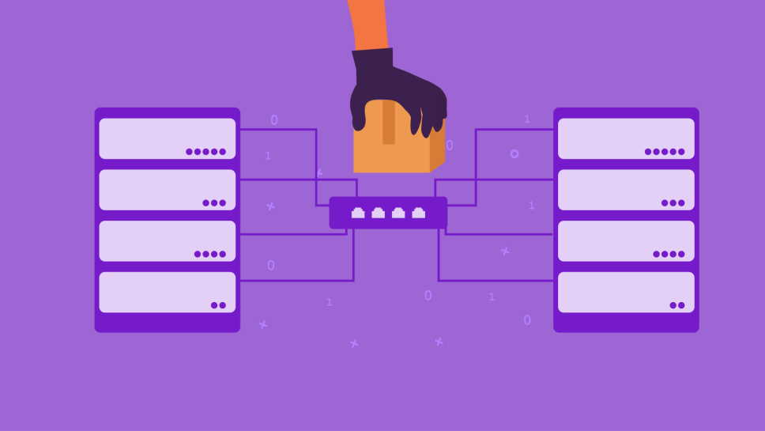

Modificação de arquivos
Caso alguns arquivos importantes comecem a alterarem de pastas ou até a se alterarem, como remover, substituir ou alterar, isto pode indicar que existe um cibercriminoso acessando o seu sistema sem qualquer permissão.